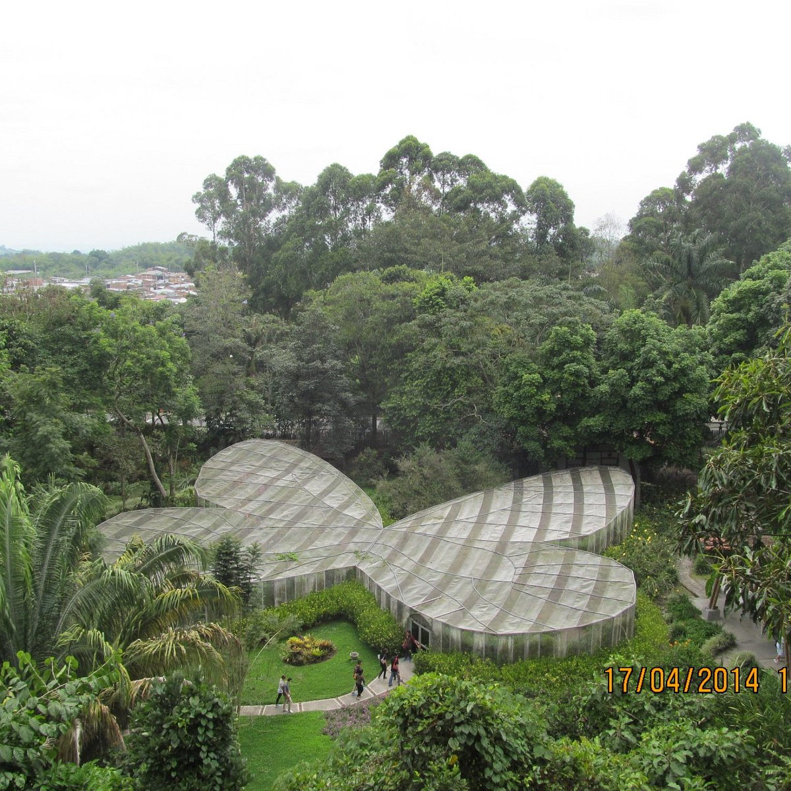

Algunos lugares...

La Divisa De Don Juan
La Divisa de Don Juan es una finca cafetera familiar en Pereira, Colombia, que ofrece tours para conocer el proceso de producción del café. También es un área de conservación de la biodiversidad.



Jardín Botánico
El Jardín Botánico de la Universidad Tecnológica de Pereira (UTP) es un lugar para observar aves, conocer la flora y la fauna, y aprender sobre el medio ambiente. Está ubicado en el campus universitario, a pocos minutos del centro de Pereira.